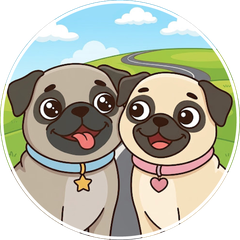
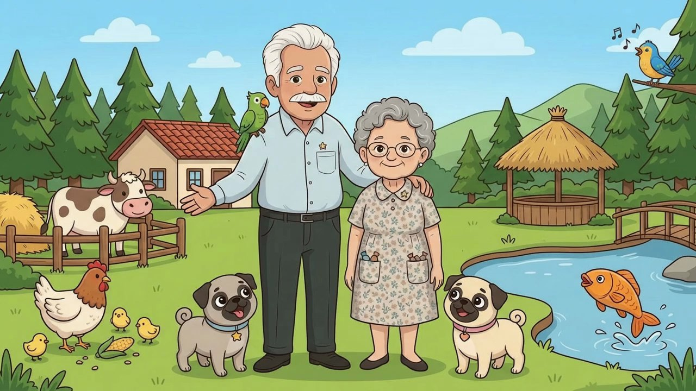

Pugs
Aven
turas
Episódios
Musiquinhas
Para colorir
Datas especiais
Joy e Jane
Clube
Entrar
← Clube
Sítio do biso e da bisa 🐔
Abrindo... 🐾
Toque no botão para pedir a bença da bisa! 🙏

🙏 Bença, vó!
🔊 Ouvir de novo
💡 Ajuda
Vamos pro pasto! 🐴 →
Mudar
🐾
Passear no sítio
Toque no bicho e ouça
🐴
Passear no pasto
Cavalos, cachorro, porquinho e pato
🔎
Cadê o bicho?
O biso e a bisa pedem, você acha
🌽
O que ele come?
O que come, o que dá, onde mora
Você conhece os bichos do sítio! 🎉🍬
Jogar de novo
Passear no sítio